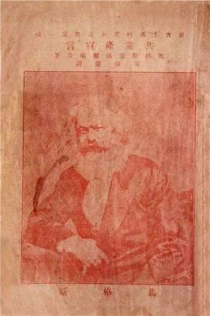
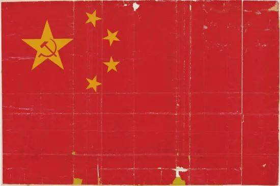

1920年11月，在陈独秀主持下，上海共产主义小组起草了《中国共产党宣言》。《中国共产党宣言》的内容包括3个部分：第一部分是共产主义者的理想、第二部分是共产主义者的目的、第三部分是阶级斗争的最近状态。《宣言》明确了党的指导思想和共产主义的理想及奋斗目标，起过临时党纲的作用，对各地建党起到了重要的指导作用。
《新青年》（LA JEUNESSE）是在20世纪20年代中国一份具有影响力的革命杂志，原名《青年杂志》，第二卷起改称《新青年》。在五四运动期间起到重要作用。自1915年9月15日创刊号至1926年7月终刊共出9卷54号。由陈独秀在上海创立，群益书社发行。该杂志发起新文化运动，并且宣传倡导民主与科学，科学（“赛先生”，Science）、民主（“德先生”，Democracy）和新文学。
五四青年节源于中国1919年反帝爱国的“五四运动”，五四爱国运动是一次彻底的反对帝国主义和封建主义的爱国运动，也是中国新民主主义革命的开始。1939年，陕甘宁边区西北青年救国联合会规定5月4日为中国青年节。青年节期间，中国各地都要举行丰富多彩的纪念活动，青年们还要集中进行各种社会志愿和社会实践活动，还有许多地方在青年节期间举行成人仪式。
中国共产主义青年团团旗是中国共产主义青年团的团旗，是中国共产主义青年团的象征和标志，团旗是由黄色五星圆环置于红旗左上角构成。
中国共产党党旗为旗面缀有金黄色党徽图案的红旗。中国共产党的党徽党旗是中国共产党的象征和标志。党的各级组织和每一个党员都要维护党徽党旗的尊严。要按照规定制作和使用党徽党旗。

1949年4月，新政治协商会议筹备会在北京成立，为即将诞生的新中国制定国旗，是筹备会担负的一项重要任务。同年7月，《人民日报》等媒体上出现了一条征稿启事：新中国正在设计国旗图稿，希望广大人民群众能够积极参与到国旗的设计中来。经过激烈的讨论和严格的筛选，最终在离开国大典还有不足十天时，一份编号“复字第32号”的图稿引起了筹备会的注意，以红色为底色，上有一颗大五角星，星中有镰刀斧头图案，大五角星周围有四颗小五角星。大家一致认为，“复字第32号”设计图比之前挑选出来的图稿寓意更加深刻、也美观大方。毛主席看到这份图稿后十分满意，并提议去掉原设计稿上的镰刀和斧头。最终确定下来旗面为红色，长方形，长与高的比例为三比二，旗面左上方缀黄色五角星五颗，一星较大、四星较小，小星环绕在大星右侧，并各有一个角尖正对大星的中心点。